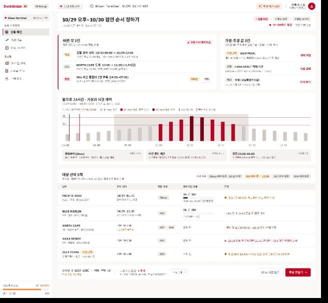
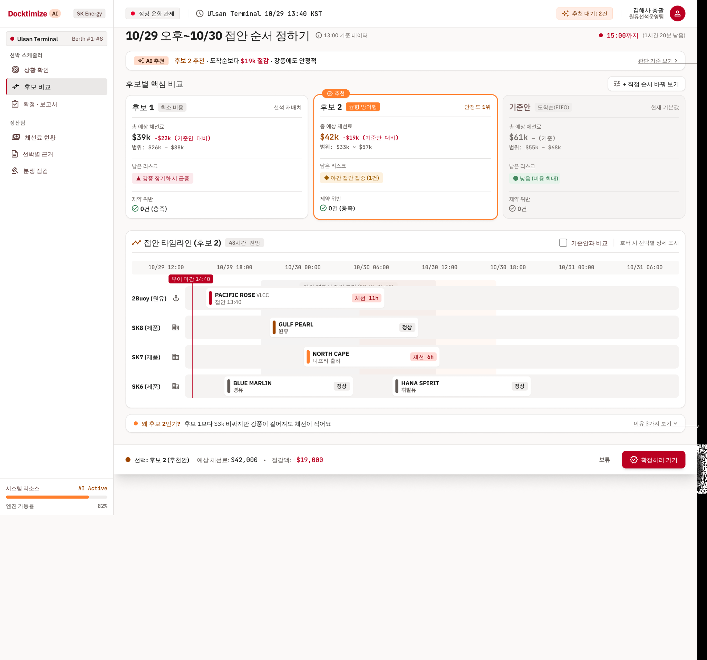
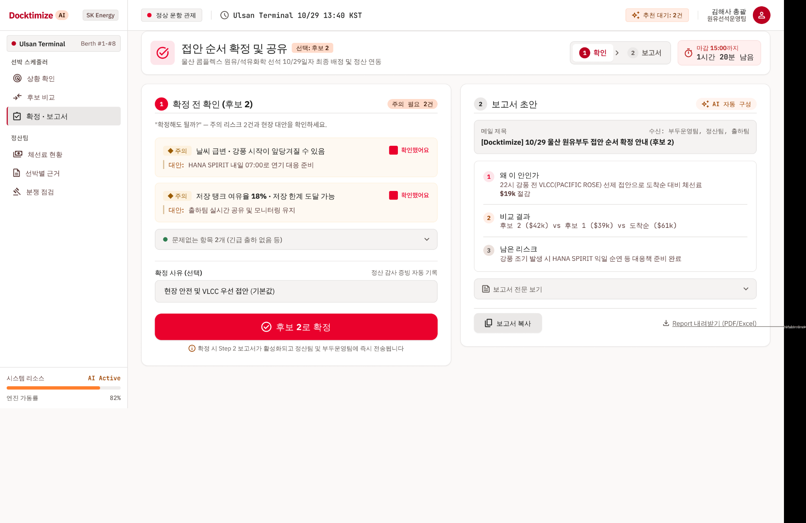

상황 확인
변경 조건, 가용·추정 조건, 앞으로 24시간 기상·시간 제약, 영향 선박 5척을 검토합니다.

후보 비교
후보 1($39k), 추천 후보 2($42k), 기존 도착순($61k)을 체선료·잔여 위험·제약 위반·48시간 접안 타임라인으로 비교합니다.

확정·보고서
경고 2건, 대응 방안, 확정 사유, 보고서 초안을 검토하고 후보 2를 확정하는 화면입니다.

주의: 이미지는 정적 캡처이며 아래 버튼처럼 보이는 요소는 작동하지 않습니다. 표시된 수치·마감시각은 디자인 예시입니다. 원본 Figma 편집 데이터는 포함되지 않습니다.
화면별 기능 명세 · UI 요소 목록 · 예시 데이터 JSON · 사용자 흐름